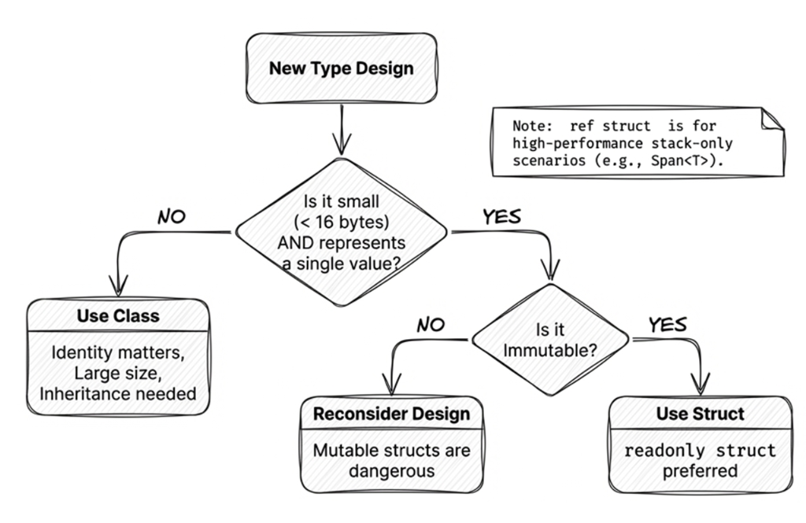

Chapter 4: Immutable design
Software development holds a truth that sounds almost contradictory: the harder your data is to change, the easier your software tends to be to maintain.
In traditional object-oriented programming, we often assume that “state changes” are both normal and desirable. However, this flexibility is also a common source of bugs: when an object’s state can be modified by any piece of code at any time, tracking down the root cause of a problem becomes much harder.
Imagine you put a document in a shared company folder and anyone can casually edit a few words. Can you still trust what the document says? That’s the chaos of mutable shared state.
Immutable design flips the default: once an object is created, you don’t modify it. If you need a different state, you create a new object.
This chapter explains how C# supports immutable design: we’ll start with the foundational choice between struct and class, then move on to modern C# features built for immutability, such as record types and init accessors.
4.1 Why immutable design?
Before we dive into syntax, let’s examine what mutable state breaks—and what immutability fixes.
Consider the following seemingly harmless code:
public class Customer
{
public string Name { get; set; }
public decimal Balance { get; set; }
}
public void ProcessPayment(Customer customer)
{
customer.Balance -= 100; // Directly mutates the passed-in object
}This code has several potential issues:
- Hidden side effects: calling
ProcessPaymentmutates the passed-incustomer, but the method signature doesn’t reveal this behavior. If callers don’t expect that side effect, they may later read data that has already been changed, leading to bugs. - Hard to trace: if
Balanceis wrong, you must search the entire codebase for every place that might mutate it. - Not thread-safe: multiple threads mutating the same object can cause race conditions.
Benefits of immutable design
Immutability—“no modification after creation”—brings these benefits:
- Predictability: An object’s state doesn’t silently change behind your back, making code easier to reason about.
- Thread safety: Immutable objects are naturally thread-safe because there is no mutation.
- Fewer side effects: Functions don’t mutate their inputs, avoiding hidden behavior.
- Better caching: Immutable objects can be cached and reused safely because they never change (for example, string interning, configuration objects).
Additional notes
- String interning (string pool): the .NET runtime can store identical string literals (like
"Hello") as a single shared instance to avoid duplicate allocations. See System.String.Intern.- Configuration objects: application settings (connection strings, endpoints, etc.). When immutable, they can be safely shared across the entire application. See Options pattern in .NET.
4.2 Struct vs. class: choosing the right type
In C#, struct and class are the two foundational user-defined types. A struct is a value type; a class is a reference type. They look similar—both can define properties, methods, and constructors—but their runtime behavior and memory semantics differ significantly. Understanding that difference is the first step to designing good types.
Value types vs. reference types
A core difference between value types and reference types is how they behave in memory. Consider the following example:
// struct is a value type
struct Point
{
public int X;
public int Y;
}
// class is a reference type
class Customer
{
public string Name { get; set; }
}Here we define Point as a value type and Customer as a reference type. Now compare how they behave:
// Value-type behavior: copy the entire value
Point p1 = new Point { X = 10, Y = 20 };
Point p2 = p1; // p2 is a full copy of p1
p2.X = 100; // only p2 is modified
Console.WriteLine(p1.X); // prints 10 (p1 is unchanged)
// Reference-type behavior: copy the reference
Customer c1 = new Customer { Name = "Alice" };
Customer c2 = c1; // c2 and c1 point to the same object
c2.Name = "Bob"; // mutates that same object
Console.WriteLine(c1.Name); // prints "Bob" (c1 changed too)This clearly shows the difference:
- A value type (
struct) is like a business card: you hand a card to a friend; if they scribble on it, your own copy remains untouched in your wallet. - A reference type (
class) is like a shared document link: you share a link; if they edit the document, those changes are instantly visible to you too, because you’re both pointing to the same underlying content.
When should you use struct?
Use struct when:
- It’s a small data structure: Coordinates, RGB colors, time ranges, dictionary keys or key-value pairs, etc.
- It’s immutable: State does not change after creation.
- You don’t need polymorphism: No need for inheritance.
Here’s a typical example:
public readonly struct Money
{
public decimal Amount { get; }
public string Currency { get; }
public Money(decimal amount, string currency)
{
Amount = amount;
Currency = currency;
}
public Money Add(Money other)
{
if (Currency != other.Currency)
throw new InvalidOperationException("Currencies do not match.");
return new Money(Amount + other.Amount, Currency);
}
}This Money struct represents an immutable monetary amount with two core pieces of information: Amount and Currency. This design keeps calculations safe—for example, Add prevents you from accidentally mixing currencies.
Note the readonly struct declaration on line 1: in this Money example, it ensures the struct’s state does not change after construction. Add returns a new Money value instead of mutating the existing one. However, keep in mind that readonly struct only guarantees that its fields cannot be reassigned; if a field refers to a mutable reference type, that still doesn’t imply deep immutability. For example:
public readonly struct Order
{
public List<string> Items { get; }
public Order(List<string> items) => Items = items;
}
var order = new Order(new List<string> { "A" });
order.Items.Add("B"); // Compiles fine! The Items reference didn't change, but its contents did.readonly struct prevents you from pointing Items at a different List<string>, but it cannot stop you from calling Add on that list. For true deep immutability, use immutable collections (see Section 4.9).
When should you use class?
Use class when your type does not meet the criteria for a struct:
- You need inheritance.
- Instances are large: copying would be expensive.
- You need reference semantics: multiple variables should refer to the same instance.
- You need lifecycle tracking: creation/disposal patterns matter.

Common mistake: mutable struct
A common bad design is making a struct mutable. For example:
// ✗ Not recommended: a mutable struct
public struct MutablePoint
{
public int X;
public int Y;
public void Move(int dx, int dy)
{
X += dx;
Y += dy;
}
}This is a classic anti-pattern. When you’re accustomed to structs being value types, this mutability can lead to confusing behavior or unexpected consequences, as shown in the following example:
MutablePoint p = new MutablePoint { X = 10, Y = 20 };
p.Move(5, 5); // p becomes (15, 25)
// But...
MutablePoint[] points = new MutablePoint[1];
points[0] = new MutablePoint { X = 10, Y = 20 };
points[0].Move(5, 5); // With arrays, this mutates the element
Console.WriteLine($"{points[0].X}, {points[0].Y}"); // "15, 25"
// And here's an even more confusing case
IList<MutablePoint> list =
new List<MutablePoint> { new MutablePoint { X = 10, Y = 20 } };
list[0].Move(5, 5); // This mutates a copy (then losing it)
Console.WriteLine($"{list[0].X}, {list[0].Y}"); // "10, 20"With arrays, calling a method on an indexed element can mutate the element because the array indexer returns a reference to the element itself. But when you access a generic list through the IList<T> interface, the indexer returns a temporary copy of the struct, so Move mutates that copy while the original element in the list remains unchanged. This is a classic “silent failure” that’s incredibly painful to debug.
Source code: DemoMutablePoint
Here’s another case that often surprises people:
// ... (continuing the previous example)
points[0].X = 99; // Compiles and runs fine
list[0].X = 99; // Compilation fails. Example compiler message:
// Cannot modify the return value of 'IList<MutablePoint>.this[int]' because it is not a variableTo avoid these issues, structs should almost always be immutable. Use readonly struct to have the compiler enforce that.
readonly struct: compiler-enforced immutability
readonly struct ensures that all fields of the struct are treated as read-only. This not only communicates intent but also enables further compiler optimizations:
readonly struct Point
{
public readonly int X;
public readonly int Y;
public Point(int x, int y)
{
X = x;
Y = y;
}
}If you try to define a mutable field or write to a field inside a readonly struct, the compiler will produce an error. You can also mark specific methods as readonly, which means the method won’t mutate any fields:
struct Point
{
public int X;
public int Y;
// A readonly method guarantees it won't mutate fields
public readonly double GetDistance()
{
return Math.Sqrt(X * X + Y * Y);
}
// This method can mutate fields
public void Reset()
{
X = Y = 0;
}
}Source code: DemoReadonlyStruct
Related Microsoft docs: The
structtype, readonly (C# reference)
At this point, designing a readonly struct looks straightforward.
Reading suggestion
Having mastered the semantic differences between
structandclass, the pitfalls of mutable structs, andreadonly struct, you now have the core foundation for designing immutable types. The upcoming discussions on “defensive copies” and “ref struct” cover advanced low-level performance and memory mechanics. If your primary goal is designing immutable data objects, DTOs, or domain models, feel free to skip directly to 4.3 record: simplifying data type definitions. You can always return to these advanced performance topics when tuning high-throughput scenarios or learning how Span works.
However, there’s still a hidden performance trap: if you don’t understand the compiler’s behavior, you can pay an extra cost without realizing it.
ref struct: stack-only structures
C# also provides a special ref struct. Its defining characteristic is being stack-only: instances can only be allocated on the stack, and the compiler strictly prohibits them from escaping to the managed heap (for example, they cannot be fields of a class, cannot be boxed, and cannot cross await boundaries).
In everyday business development and immutable domain modeling, readonly struct or record (introduced next) is usually sufficient; ref struct is primarily designed to support zero-allocation operations for extreme performance (such as Span<T> and ReadOnlySpan<T>).
For the full set of language restrictions, zero-allocation slicing mechanisms, and memory safety principles of ref struct, please refer directly to Section 13.4 in Chapter 13: High-Performance Memory Operations.
4.3 record: simplifying data type definitions
Some types exist mainly to store and carry data—for example, DTOs, domain events, and application settings. With these types, we usually care whether their data is the same, not whether two variables refer to the same object. We may also want them to display meaningful contents and make it easy to create a copy with only a few values changed.
With an ordinary class, you often have to implement these features yourself: override Equals, GetHashCode, and ToString, and write additional code for deconstruction or copying. None of these tasks is especially difficult on its own, but together they create a fair amount of repetitive boilerplate.
C# 9 introduced record to simplify the design of these data-centric types. We’ll first look at the basic declaration and the members generated by the compiler, then examine value equality, and finally compare when to use record class and record struct.
record declaration syntax
The syntax for defining a record is concise:
// Primary-constructor syntax
public record Person(string Name, int Age);This form, with parameters written directly after the type name, is called a positional record. From that single line, the compiler generates several useful members based on Name and Age:
- Corresponding
initproperties namedNameandAge(see Section 4.4). - Generated value-equality members such as
Equals,GetHashCode, and the==and!=operators. - Useful
ToString()output, such asPerson { Name = Alice, Age = 30 }. - A
Deconstructmethod for deconstruction. - Compiler-generated members that support
withexpressions (see Section 4.5; the internal mechanism differs slightly betweenrecord classandrecord struct).
What is a primary constructor?
A primary constructor places constructor parameters directly after the type name. The syntax first appeared with records in C# 9 and was later extended to ordinary classes and structs in C# 12.
For an ordinary class or struct, primary-constructor parameters do not automatically become fields or properties. For a positional record, the compiler generates corresponding public properties. That is why the example above can define
NameandAgein one line.
The following example shows several convenient features of records:
// 1. Properties with init accessors
var person = new Person("Alice", 30);
// person.Name = "Bob"; // ✗ Compile error: init-only
// 2. Meaningful ToString
Console.WriteLine(person);
// Output: Person { Name = Alice, Age = 30 }
// 3. Value equality: the same data means the values are equal
var person2 = new Person("Alice", 30);
Console.WriteLine(person == person2); // True (same contents)
// 4. Deconstruct
var (name, age) = person;
Console.WriteLine($"{name} is {age} years old"); // Alice is 30 years old
// 5. with expression support (see Section 4.5)
var olderPerson = person with { Age = 31 };
Console.WriteLine(olderPerson); // Person { Name = Alice, Age = 31 }If you wrote the same behavior with a traditional class, you’d usually end up with many lines of boilerplate code.
Note
The central idea of
recordis language support for data-centric types; a record does not by itself guarantee immutability. ThePersonexample is a positionalrecord class, so the compiler generatesinitproperties forNameandAge. If you instead declare ordinary properties withsetaccessors in the record body, the record can still be mutable.Also,
initprevents a property from being reassigned after initialization. If the property refers to a mutable object, that object’s contents can still change. Section 4.4 examinesinitaccessors in more detail.
Value equality
Of the generated features listed above, value equality deserves a closer look first. The following example shows the behavioral difference between an ordinary class and a record:
// A class uses reference equality by default
class PersonClass
{
public string Name { get; set; }
public int Age { get; set; }
}
var p1 = new PersonClass { Name = "Alice", Age = 30 };
var p2 = new PersonClass { Name = "Alice", Age = 30 };
Console.WriteLine(p1 == p2); // False (different instances)
// A record uses value equality by default
record PersonRecord(string Name, int Age);
var r1 = new PersonRecord("Alice", 30);
var r2 = new PersonRecord("Alice", 30);
Console.WriteLine(r1 == r2); // True (same values)Key differences:
- Default class behavior:
p1 == p2compares references. Even ifp1andp2have identical contents, they’re two different instances, so the result isFalse. - Default record behavior: The compiler generates value-equality members such as
Equals,GetHashCode, and==. For thePersonRecord(string Name, int Age)example above, two records are compared using the values ofNameandAge, rather than merely checking whether both variables refer to the same object.
Note
Record value equality is not recursive deep equality. If a member is an array, collection, or another reference type, that member still follows its own equality rules. For example, two separately created arrays with identical elements may still compare as different values by default.
Source code: DemoRecord
For data-centric types, record equality often matches the requirement more closely: whether two instances are equal depends on the equality rules of their data members, not on object identity.
That makes records a good fit for:
- DTOs (data transfer objects): to move data across layers
- Domain events: to represent something that happened in the system
- Configuration types: application settings
record class vs. record struct
The earlier Person example uses the most common form, record class. Starting with C# 10, you can also declare a record as the value type record struct. This lets you choose based on data size, copying cost, and how the type will be used:
// record class (default; same as writing record)
public record class PersonRecord(string Name, int Age);
// record struct (a value-type record)
public record struct Point(int X, int Y);
// readonly record struct (prevents fields and properties from being reassigned)
public readonly record struct ImmutablePoint(int X, int Y);record class is the default. When you write record MyRecord, you’re effectively declaring a record class.
With positional record class syntax, primary-constructor parameters generate init-only properties by default. They can be set during initialization but cannot be reassigned afterward:
// Positional record class: primary-constructor parameters generate init-only properties
public record class PersonClass(string Name, int Age);
var p1 = new PersonClass("Alice", 30);
p1.Name = "Bob"; // ✗ Compile error: init-only properties can't be changed after initializationWith positional record struct syntax, primary-constructor parameters generate read-write properties by default, so they can be reassigned after construction:
public record struct PersonStruct(string Name, int Age);
var p2 = new PersonStruct("Alice", 30);
p2.Name = "Bob"; // ✓ Mutable (which may not be what you want)If you want to prevent those positional properties from being reassigned after initialization, use readonly record struct:
// Positional readonly record struct: init-only properties
public readonly record struct PersonStruct(string Name, int Age);
var p3 = new PersonStruct("Alice", 30);
p3.Name = "Bob"; // ✗ Compile errorreadonly prevents fields and properties from being reassigned. If a member refers to a mutable object, that object’s contents can still change.
When should you use record class?
record class is a reference type and is a good fit when you want to:
1. Define DTOs: pass data across layers or services
public record class UserDto(int Id, string Email, string DisplayName);2. Model domain events: represent important events in the system
public record class OrderPlacedEvent(int OrderId, DateTime PlacedAt, decimal Total);3. Represent larger data shapes: many properties or nested structures where copying would be expensive
public record class CustomerProfile(
string Name,
string Email,
Address ShippingAddress,
List<Order> RecentOrders
);Because it’s a reference type, multiple variables can point to the same instance. When you use init-only properties and avoid exposing mutable internal objects, it works well for passing and sharing data throughout an application.
When should you use record struct?
record struct is a value type, so its use cases are largely the same as struct. For example:
// Small, independent value objects, such as coordinates or colors
public readonly record struct Point(int X, int Y);
public readonly record struct ColorRgb(byte R, byte G, byte B);
// Avoiding heap allocation: high-performance calculations or frequently created/collected values
public readonly record struct TimeRange(DateTime Start, DateTime End);
// Dictionary keys: use as a composite key
public readonly record struct CacheKey(string UserId, string Resource);
var cache = new Dictionary<CacheKey, string>();Selection guidelines
Choosing record class vs. record struct follows the same general guidance as choosing class vs. struct:
- Most of the time: use
record classunless you have a specific performance reason. - Small value objects: consider
readonly record struct. - When unsure: start with
record classand optimize only when profiling proves it’s needed.
The following table summarizes key differences between class, struct, record class (i.e., record), and record struct:
| Feature | class | struct | record class | record struct |
|---|---|---|---|---|
| Type category | Reference type | Value type | Reference type | Value type |
| Inheritance | ✓ Supports inheritance | ✗ No inheritance (can implement interfaces) | ✓ Supports inheritance | ✗ No inheritance (can implement interfaces) |
| Default equality | Reference equality | Value equality (Equals/GetHashCode) |
Value equality (generated) | Value equality (generated) |
| Mutability | Depends on member declarations | Mutable by default (prefer readonly struct) |
Depends on member declarations; positional properties are init-only by default | Depends on member declarations; positional properties are read-write by default |
| ToString() | Type name by default | Type name by default | Generated (prints data member names and values) | Generated (prints data member names and values) |
with support |
No (manual) | ✓ Yes (C# 10+) | ✓ Yes (generated) | ✓ Yes (generated) |
| Deconstruction | Manual Deconstruct needed |
Manual Deconstruct needed |
Generated for positional declarations | Generated for positional declarations |
| Typical use | Inheritance, larger objects, reference semantics | Small data, performance, avoid heap allocation | DTOs, domain events, configuration, immutable data | Small value objects, composite keys |
4.4 init accessors: preventing reassignment after initialization
Before C# 9, if you wanted to prevent callers from reassigning properties after an object was created, the usual approach was get-only properties assigned in the constructor. However, this meant sacrificing the convenience of object initializers (introduced back in C# 3.0). You had to choose between restricting reassignment and using initializer syntax.
C# 9’s init accessors solve that by letting you set properties only during initialization. You can keep object initializer syntax while preventing those properties from being reassigned later. This restriction helps with immutable design, but it does not make an object deeply immutable when a property refers to a mutable object.
init accessor syntax
Compare the traditional approach with an init accessor:
// Traditional: constructor parameters
public class Person
{
public string Name { get; }
public int Age { get; }
public Person(string name, int age)
{
Name = name;
Age = age;
}
}
var person = new Person("Alice", 30); // Must use the constructorThis prevents those properties from being reassigned after construction, but you lose object initializer convenience—and constructor parameter lists can get unwieldy when there are many properties.
With init accessors:
public class Person
{
public string Name { get; init; }
public int Age { get; init; }
}
// Object initializer is allowed; properties cannot be reassigned afterward
var person = new Person { Name = "Alice", Age = 30 };
// Any later mutation fails at compile time
person.Name = "Bob"; // ✗ Compile error: init-onlyinit combines two goals: preventing property reassignment and retaining object initializer syntax.
You keep the flexibility of object initializers (set only what you need, in any order) while preventing those properties from being reassigned after initialization.
However, init has a small gap: it cannot force callers to set certain properties. If a caller omits Name, the object is still created—just with default values. The required modifier introduced in C# 11 fills exactly this gap.
Using the required modifier (C# 11)
C# 11 introduced the required modifier to force callers to provide certain properties during initialization:
public class Person
{
public required string Name { get; init; }
public int Age { get; init; } // optional
}
// Name is required
var person = new Person { Name = "Alice" }; // ✓ OK
// Missing Name produces a compile error
var invalid = new Person { Age = 30 }; // ✗ Compile error: Name is requiredrequired ensures that callers must initialize those required members when creating the object, which helps prevent a “missing entirely” kind of half-initialized state (for example, creating a Person and forgetting to provide Name at all).
However, be careful: required guarantees “must be initialized,” not “must be non-null.” If the member type is a non-nullable reference type, the compiler will typically report nullable warnings; if you need to strictly reject invalid values, you should still add appropriate validation logic.
Together, required + init gives you a practical balance: language-level checks during initialization, plus the convenience of object initializers.
Source code: DemoInitAccessor
4.5 with expressions: nondestructive mutation
With immutable design, you do not modify an existing object directly. Instead, you use it as the basis for a copy with selected values changed. A with expression provides concise syntax for this “copy and change” operation.
Here’s the basic idea:
public record Person(string Name, int Age);
var alice = new Person("Alice", 30);
// Use a with expression to create a new instance with specific changes
var olderAlice = alice with { Age = 31 };
Console.WriteLine(alice); // Person { Name = Alice, Age = 30 }
Console.WriteLine(olderAlice); // Person { Name = Alice, Age = 31 }The semantics of with are: “create a copy, then set certain members on the copy.” The operation does not modify the original object, but it still provides convenient mutation-like syntax.
This pattern is often called nondestructive mutation: rather than changing the original object, you create a new version.
It’s like making a photocopy and correcting the copy: the original remains unchanged.
Modifying multiple properties
You can update multiple members in a single with expression:
var bob = alice with { Name = "Bob", Age = 25 };The syntax is intuitive: “give me a copy of alice, but with these fields replaced.”
How with works under the hood
Under the hood, a with expression involves two key phases:
- Copy phase:
record class: The compiler creates a copy via a synthesized copy constructor. This is a field-level shallow copy (including private and hidden backing fields) that bypassesinitaccessors to ensure the full internal state is preserved.record struct/ ordinarystruct: Performs a direct value copy without calling a copy constructor.
- Update phase: Invokes the
initor setter accessors for the members specified in the braces to apply the new values. Therefore, modified properties still run their validation logic; unspecified members directly retain their values from the copy phase.
This two-stage model guarantees high-performance nondestructive mutation (avoiding constructing the entire object from scratch) while preserving property validation.
Note: Shallow copy warning
withcopies the object itself. If a member references an external mutable object (such as an array or a standardList), both the old and new instances still point to the same collection, and modifying the collection’s contents will affect both.
Ask AI
In C#, when using
recordand thewithexpression, if a member contains a mutable reference type (such asList<T>), how can you achieve a deep copy? Please provide code examples.
What about non-record types?
with isn’t limited to record types: ordinary struct types also support with. For ordinary classes, however, with is not supported. A copy constructor or Clone method by itself does not enable with; if you need similar behavior, you must provide your own copying API and call it explicitly. Also note that record struct and ordinary struct both rely on ordinary value copying, not the hidden clone/copy-constructor machinery used for record class.
public class Person
{
public string Name { get; init; } = "";
public int Age { get; init; }
public Person() { }
protected Person(Person original)
{
Name = original.Name;
Age = original.Age;
}
public Person Copy(string? name = null, int? age = null)
{
return new Person(this)
{
Name = name ?? Name,
Age = age ?? Age
};
}
}
var alice = new Person { Name = "Alice", Age = 30 };
var bob = alice.Copy(name: "Bob");Source code: DemoWithExpression
4.6 Derived properties and lazy evaluation
Immutable types often include derived (calculated) properties—values computed from other members. A common technique is lazy evaluation, deferring computation until the value is actually needed; when calculation is expensive, it is often paired with caching (memoization) for subsequent reads.
Here’s a simple derived property:
public record Point(double X, double Y)
{
public double DistanceFromOrigin => Math.Sqrt(X * X + Y * Y);
}This is concise, but every access recalculates DistanceFromOrigin, which can be unnecessary overhead.
Lazy evaluation with caching
If the computation is expensive, you can cache the computed result:
public record Point(double X, double Y)
{
private double? _distanceCache;
public double DistanceFromOrigin
{
get
{
if (_distanceCache == null)
{
_distanceCache = Math.Sqrt(X * X + Y * Y);
}
return _distanceCache.Value;
}
}
}You can make it even more concise with the null-coalescing assignment operator (??=):
public double DistanceFromOrigin => _distanceCache ??= Math.Sqrt(X * X + Y * Y);This means: if _distanceCache is null, compute and assign it; otherwise return the cached value.
Operator evaluation order
The evaluation order of
_distanceCache ??= expressionis:
- Check whether
_distanceCacheis null.- If it is null, evaluate the right-hand
expressionand assign it to_distanceCache.- Return the value of
_distanceCache(either the existing value or the newly computed one).This syntax is concise, but it is not an atomic operation in the multithreading sense, and it does not by itself provide thread-safe lazy initialization. Two threads could both observe
null, each compute the value independently, and both write their result—resulting in duplicate computation. If the computation is a pure function (likeMath.Sqrthere), the duplicated work is harmless; if it has side effects, it could be a real bug. For thread-safe lazy initialization, consider usingLazy<T>.For a deeper explanation of
??=, see Chapter 3.
Handling cache invalidation: keeping nondestructive mutation correct
When an immutable object creates a new version via a with expression, any cached computations must be properly invalidated. If private fields are copied verbatim, the new object might mistakenly reuse obsolete computed results.
In a record class, the cleanest solution is a custom copy constructor that deliberately leaves the private cache field out of the copy, forcing the new object to recompute on first access:
public record Point(double X, double Y)
{
private double? _distanceCache;
public double DistanceFromOrigin =>
_distanceCache ??= Math.Sqrt(X * X + Y * Y);
// Custom copy constructor: copy only X and Y, leaving _distanceCache as null
protected Point(Point other) => (X, Y) = other;
}
var p1 = new Point(3, 4);
Console.WriteLine(p1.DistanceFromOrigin); // 5 (computed and cached)
var p2 = p1 with { Y = 5 };
Console.WriteLine(p2.DistanceFromOrigin); // 5.83... (cache recomputed)Advanced tip: precise invalidation using init accessors
A drawback of the copy-constructor approach is that every
withexpression resets the cache, even when modifying properties unrelated to the calculation. For maximum precision, you can use the C# 14fieldkeyword to explicitly set_distanceCache = nullinside theinitaccessors of relevant properties, invalidating the cache only when crucial members change.
Source code: DemoLazyEvaluation
Design principle
Lazy evaluation within immutable types is a safe and widely used optimization. While we technically “mutate” the
_distanceCachefield internally, this does not violate immutability because it has zero impact on the object’s logical state. This pattern is known as logical immutability.
4.7 Practical application: an immutable domain model
Suppose we’re building an order system and use records to define an immutable order:
using System.Collections.Immutable;
// Use a record to define an immutable order item
public record OrderItem(string ProductName, int Quantity, decimal UnitPrice)
{
public decimal TotalPrice => Quantity * UnitPrice;
}
// Use a record to define an immutable order
public record Order(
int OrderId,
string CustomerName,
ImmutableList<OrderItem> Items,
DateTime CreatedAt)
{
public decimal TotalAmount => Items.Sum(item => item.TotalPrice);
// Use a with expression to "modify" the order
public Order AddItem(OrderItem item)
{
return this with { Items = Items.Add(item) };
}
}This example deliberately uses ImmutableList<OrderItem> instead of wrapping a List<OrderItem> in IReadOnlyList<OrderItem>. The latter only hides the writable API; the underlying collection can still be mutated elsewhere. ImmutableList<T> is genuinely immutable. Section 4.9 covers immutable collections in more detail.
Next, let’s see how to use this immutable order model:
using System.Collections.Immutable;
var order = new Order(
OrderId: 1,
CustomerName: "Alice",
Items: ImmutableList.Create(
new OrderItem("Keyboard", 1, 2500)),
CreatedAt: DateTime.Now
);
// "Modify" the order (this actually creates a new order object)
var updatedOrder = order.AddItem(new OrderItem("Mouse", 2, 800));
Console.WriteLine($"Original order total: {order.TotalAmount}"); // 2500
Console.WriteLine($"Updated order total: {updatedOrder.TotalAmount}"); // 4100In this example, we never mutate an existing object. Instead, we create a new object to represent each new state. Because Items also uses a truly immutable collection, the original order cannot be changed later through some external reference to the collection.
Benefits of this design:
- History tracking: every “change” produces a new version, making undo/redo easy
- Thread safety: immutable objects are safe to use across threads
- Predictability: functions have fewer side effects and are easier to test
Source code: DemoOrderModel
Closed state modeling: Union Types (C# 15)
The Order and OrderItem models introduced earlier are composed of multiple properties existing simultaneously. In type theory, these are known as product types—their state space is “possible values of property A × possible values of property B”.
In real-world domain modeling, however, we often encounter an opposing need: closed, mutually exclusive states. In type theory, these are known as sum types or discriminated unions—their state space is “possible values of state A + possible values of state B”, and at any given moment, an instance can only be one of them.
For example, an order’s payment method can only ever be “Cash”, “CreditCard”, or “BankTransfer”, and each carries entirely distinct information:
- Cash requires a cash tender/change amount (
Amount) - CreditCard requires a card number (
CardNumber) and an authorized amount - BankTransfer requires an account number (
AccountNo) and a transfer amount
Prior to C# 15, modeling this structure usually involved two compromises: declaring a monolithic class with an enum tag and numerous error-prone null fields, or defining an abstract base class/record and having each state inherit from it. While type-safe, class hierarchies are verbose and remain an open type hierarchy unless strictly constrained.
C# 15 introduces native union types to address this modeling pain point with concise syntax:
// (1) Define immutable carriers for each mutually exclusive state
public record class Cash(decimal Amount);
public record class CreditCard(string CardNumber, decimal Amount);
public record class BankTransfer(string AccountNo, decimal Amount);
// (2) Use the C# 15 union keyword to declare a closed payment method
public union PaymentMethod(Cash, CreditCard, BankTransfer);- Each state remains an independent, immutable
recordencapsulating its own fields and logic. union PaymentMethod(...)declares thatPaymentMethodcan only ever be one of the three types listed in parentheses, without requiring a manual abstract base class.
Callers can implicitly convert member types directly into the union type:
// Assign member instances directly with natural syntax
PaymentMethod method1 = new Cash(500m);
PaymentMethod method2 = new CreditCard("4111-2222-3333-4444", 1200m);When to use inheritance? When to use union types?
In immutable architectural design, deciding between class inheritance hierarchies and union types depends on the openness of your domain states:
- Use object-oriented inheritance (Open Hierarchy): When your system is open-ended, expecting future modules or external packages to extend with new subtypes (e.g., a graphics library with a base
Shapeclass, where third parties can addTriangle). - Use union types (Closed Hierarchy): When states are closed and fixed by business rules (e.g., order payment methods, or
SuccessandFailureresults of a network request). Union types guarantee that no unknown third-party types can slip in.
Looking ahead: powerful synergy with pattern matching
Beyond making domain models more precise, the greatest value of union types lies in their synergy with pattern matching: when using a
switchexpression on aPaymentMethod, the compiler knows all possible cases and provides compile-time exhaustiveness checking, eliminating the need for arbitrary_ => throwfallback arms! We will explore this in depth in Chapter 6: Pattern Matching.
AI collaboration: refactor toward immutability
The example above showed how to design an immutable model from scratch. In practice, though, you’re more likely to turn existing classes into immutable ones. This kind of refactoring involves type choices, initialization style, and API design, so it’s a good place to ask AI tools to help structure your refactoring approach:
Prompt
Refactor the core data objects in this project into immutable types. Requirements:
- Use
recordorreadonly struct(choose appropriately)- Use
initaccessors- Provide an API that works well with
withexpressions- Explain the reasoning behind your design choices
Source code: DemoUnionTypes
4.8 The cost of manual value equality
Section 4.3 demonstrated the out-of-the-box value equality that record provides. In contrast, if you need to implement full value equality on an ordinary class or custom struct, you must manually fulfill C#’s four-fold equality contract:
- Implement
IEquatable<T>: Provides a strongly-typedEquals(T? other)method that avoids boxing. - Override
object.Equals(object? obj): Ensures consistent results when called via non-genericobject. - Override
object.GetHashCode(): Ensures equal objects produce identical hash codes, which is essential for dictionary and hash-set lookups. - Overload
==and!=operators: Ensures equality operators matchEqualslogic.
Here is the boilerplate required for a manual implementation:
public class Person : IEquatable<Person>
{
public string Name { get; }
public int Age { get; }
public Person(string name, int age) => (Name, Age) = (name, age);
// 1. Strongly typed IEquatable<T>
public bool Equals(Person? other) =>
other is not null && (ReferenceEquals(this, other) || (Name == other.Name && Age == other.Age));
// 2. Override Object.Equals
public override bool Equals(object? obj) => Equals(obj as Person);
// 3. Override GetHashCode (must strictly match Equals logic!)
public override int GetHashCode() => HashCode.Combine(Name, Age);
// 4. Operator overloads
public static bool operator ==(Person? left, Person? right) =>
left is null ? right is null : left.Equals(right);
public static bool operator !=(Person? left, Person? right) => !(left == right);
}Missing any part of this contract can lead to subtle bugs (e.g., == returning false while Equals returns true, or objects vanishing inside a dictionary). This is precisely why modern C# strongly recommends preferring record for domain models and data transfer: the compiler synthesizes this entire set of boilerplate correctly and automatically.
Source code: DemoEquality
4.9 Immutable collections
So far we’ve focused on the immutability of individual objects. However, if your object contains a collection—and that collection can still be modified externally—your “immutable” design can still be undermined by external mutation.
That’s where .NET’s immutable collections come in, such as ImmutableArray<T> and ImmutableList<T>. These aren’t just “a List<T> viewed through IReadOnlyList<T>”; they are fundamentally different implementations.
The problem with mutable collections
Even if you mark a mutable collection (like List<T>) as readonly, or expose it as IReadOnlyList<T>, the underlying data can still be modified (for example, by casting it back to List<T>). Consider:
class NumberStore
{
private readonly List<int> _numbers = new List<int> { 1, 2, 3 };
public void Demo()
{
_numbers.Add(4); // Still mutable! readonly protects the field reference, not the contents
IReadOnlyList<int> readOnlyView = _numbers;
((List<int>)readOnlyView).Add(5); // Can still mutate via cast
}
}In this example, readonly simply ensures that the field _numbers cannot be reassigned to a different List<int> after initialization. It does nothing to prevent someone from changing the elements inside that list.
System.Collections.Immutable
.NET provides the System.Collections.Immutable package, which contains truly immutable collection types such as ImmutableList<T> and ImmutableDictionary<TKey, TValue>.
The key principle is: every “mutation” returns a new collection, leaving the original unchanged.
It’s like taking a photo (a snapshot). The landscape can change, but the photo stays the same. If you want a new view, you take a new photo.
Example:
using System.Collections.Immutable;
var list1 = ImmutableList.Create(1, 2, 3);
var list2 = list1.Add(4);
Console.WriteLine(string.Join(", ", list1)); // 1, 2, 3 (unchanged)
Console.WriteLine(string.Join(", ", list2)); // 1, 2, 3, 4 (new)
// list1 is unchanged; list2 is a new listNotice that list1 is unchanged. That makes it safe to pass around without worrying that another method will mutate it.
Performance considerations
Because every change returns a new object, you might worry about performance overhead. However, these collections use specialized data structures (such as balanced trees) to implement structural sharing. This means “copying” doesn’t duplicate every element—most of the internal nodes are reused.
Even so, write-heavy workloads are typically more expensive than with mutable collections. If you need to perform many updates (for example, building a list in a loop), use the builder pattern:
var builder = ImmutableList.CreateBuilder<int>();
builder.Add(1);
builder.Add(2);
// ... lots of updates ...
var list = builder.ToImmutable();Builders reduce intermediate allocations during bulk updates and let you freeze the result into an immutable collection at the end.
How builders work
A builder uses a mutable internal representation during construction, and then converts (freezes) it into an immutable collection. This avoids creating a new immutable instance for every
Addand can significantly improve performance for bulk operations.
ImmutableArray<T> vs. ImmutableList<T>
Another common option is ImmutableArray<T>. Internally it wraps an array, so it tends to have better memory usage and read performance than tree-based ImmutableList<T>.
- ImmutableArray: Great read performance (\(O(1)\), contiguous memory), but each change copies the whole array (\(O(N)\)). Best for “build once, read many.”
- ImmutableList: Tree-based with structural sharing. Updates like
Add/Removeare typically \(O(\log N)\), but “read cost” depends on what you mean (for example, enumeration is still \(O(N)\), while indexed access has the extra overhead of tree traversal). Better when you need frequent updates while keeping immutable semantics.
So if your collection is mostly read-only after construction, prefer ImmutableArray<T>.
Source code: DemoImmutableCollections
Beyond the immutable collections provided by System.Collections.Immutable, if your scenario is “build once, then only read—never modify,” .NET 8+ offers another set of even better choices.
FrozenDictionary and FrozenSet
.NET 8 introduced the System.Collections.Frozen namespace, which includes FrozenDictionary<TKey, TValue> and FrozenSet<T>.
These types have different goals from the immutable collections above:
ImmutableDictionary: Supports non-destructive modifications (each mutation returns a new instance). Tree-based internally, so element insertion is relatively fast, but lookups are slower.FrozenDictionary: Completely frozen after creation — no mutations whatsoever. Lookup performance is excellent (faster than a regularDictionary), but construction has a higher upfront cost (slower to initialize). Best suited for “build once at startup, read many times” scenarios such as configuration lookup tables and keyword maps.
FrozenSet<T> is the read-optimized counterpart to ImmutableHashSet<T>, similarly tuned for lookup performance.
Example:
using System.Collections.Frozen;
var config = new Dictionary<string, string>
{
["timeout"] = "30",
["retries"] = "3"
}.ToFrozenDictionary();
// Lookups are faster than a regular Dictionary, and the collection can never be modified
string value = config["timeout"];In summary, the right collection depends on your usage pattern: for frequent modifications with version history, use ImmutableList or ImmutableDictionary; for mostly-read data with occasional modifications, use ImmutableArray; for data that never changes after construction and demands the fastest lookups, use FrozenDictionary or FrozenSet.
Summary
- Immutable design reduces mutation, making code more predictable, safer, and easier to maintain.
structvs.class: Structs are value types and work best for small, immutable data; classes are reference types and work best for larger models and inheritance.readonly structlets the compiler enforce read-only data members and helps avoid defensive copies caused by instance members that aren’t correctly markedreadonly.ref structis stack-only and enables high-performance APIs likeSpan<T>.- Records are data-centric types with compiler-generated value equality,
ToString, andwithsupport, but records do not by themselves guarantee immutability; you can chooserecord classorrecord struct. initaccessors make properties settable only during initialization; combined withrequired, they enforce required initialization.withexpressions provide nondestructive mutation by creating a new instance.- Derived properties + lazy evaluation can improve performance via caching without breaking logical immutability.
- Equality: understand reference equality vs. value equality, and implement
GetHashCodeconsistently (or just use records). - Immutable collections: use
System.Collections.Immutableand builders for bulk updates. For collections that are built once and then read heavily, considerFrozenDictionaryorFrozenSetfromSystem.Collections.Frozenfor faster lookups. - Union types (C# 15): Native language support for discriminated unions and sum types, establishing safe and strongly typed immutable domain models for mutually exclusive, closed states.
C# is no longer limited to traditional getters and setters. From readonly struct to records, init accessors, and union, modern C# makes immutable design much easier to apply.
When designing a new type, consider making “immutable by default” your starting point. Spending less time chasing “who changed my data?” leaves more time for work that actually matters.
Glossary
| Term | Description |
|---|---|
| Copy constructor | A special constructor used to copy an existing instance; record class can have one synthesized by the compiler as part of cloning. |
| Deep copy | A recursive copy that duplicates nested objects and collections rather than sharing references. |
| Discriminated union | A data structure that holds a value of one of several possible types, tagged with an identifier. |
| Hash code | A numeric value used by hash-based collections (like Dictionary/HashSet) for fast lookup. |
| Immutable | An object whose logical state cannot be changed after creation. |
| Immutable collection | A collection that never changes; “mutations” return a new collection (for example ImmutableList<T>). |
init accessor |
A property accessor that can be set only during initialization. |
| Lazy evaluation | Defer computation until the value is actually needed; in property implementations, often paired with caching to avoid recomputation. |
| Logical immutability | A pattern where the logical state is immutable, even if internal caches are updated for performance. |
| Primary constructor | Constructor parameter syntax declared with the type, available across the type body. |
| Product type | A composite type formed by combining multiple attributes simultaneously (such as a class or record). |
readonly struct |
A struct declaration that enforces non-mutation of instance fields. |
| Record | A data-centric type introduced in C# 9 with generated value equality; it does not by itself guarantee immutability. |
ref struct |
A stack-only struct type used for high-performance scenarios (for example Span<T>). |
| Reference equality | Equality based on whether two variables refer to the same instance. |
| Reference type | A type whose variables hold references to objects (for example class). |
required modifier |
A modifier that forces callers to initialize required members during object initialization. |
| Shallow copy | A copy that duplicates top-level fields but continues to share referenced sub-objects. |
| Structural equality | Equality based on comparing an object’s members (structure/contents). |
| Structural sharing | An immutable-collection technique that reuses internal nodes between versions to reduce copying. |
| Sum type | A type whose state space is the sum of its possible variants, representing mutually exclusive alternatives (such as a union). |
| Union type | A C# 15 feature allowing the declaration of a closed set of mutually exclusive types. |
| Value equality | Equality based on comparing member values rather than references. |
| Value type | A type whose variables contain the data directly (for example struct). |
with expression |
Syntax that creates a copy from an existing instance and assigns new values to selected members. |